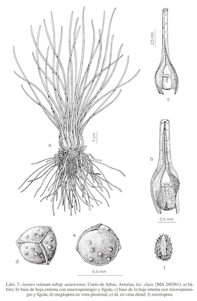

- Isoetes, del griego
isoetés, igual en años.
|
- Pequeños helechos heterospóreos
que habitan en zonas temporalmente inundadas
por agua dulce.
|
- Actualmente un solo género, Isoetes,
con 150-200 spp. repartidas por casi todo el
mundo.
|
- Siete especies en la Península, de
las cuales 3 llegan a Andalucia.
|
- Son plantas erectas pero de tallo
corto y bulbiforme, con numerosos micrófilos
filiformes y alargados, muy juntos, que le dan
aspecto de un cebollino en miniatura.
|
- Numerosas raíces secundarias en la
base.
|
- Hojas externas con megasporangio
basal.
|
- Hojas medias con microsporangio
basal.
|
|
|
|

Lámina de Flora iberica
|